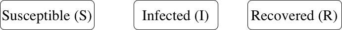
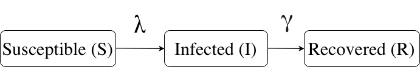
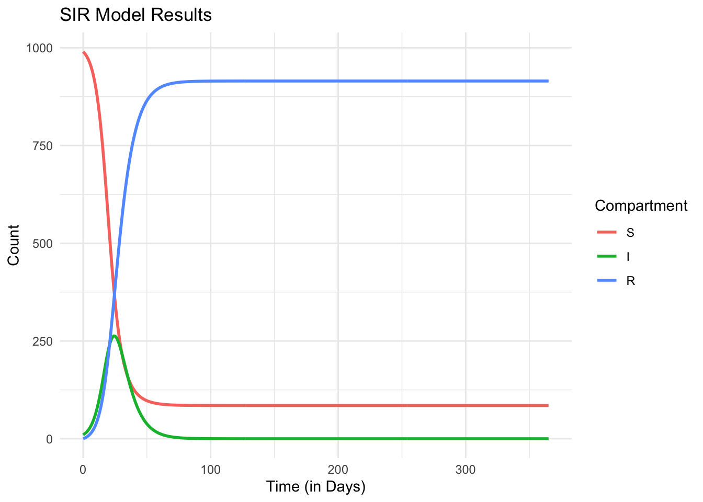

library(tidyverse)
# Setting initial conditions
S <- 990
I <- 10
R <- 0
N <- S+I+R
d_time <- 1
max_time <- 365
# Define final output with initial conditions (dataframe with 4 columns: Time, S, I, R)
output <- tibble(Time=seq(0,max_time,by=d_time), S=NA, I=NA, R=NA)Foot-and-Mouth Disease: step-by-step modeling
Teaching
Hands-on intro to simulation modelling in R: the FMD case study
1 Background
Foot-and-mouth disease (FMD) is a severe, fast-spreading viral disease that primarily affects cloven-hoofed animals, including cows, pigs, sheep, goats, and deer, leading to considerable economic losses worldwide. As such, defining targeted FMD surveillance and control strategies becomes essential to prevent … An affordable way to understand FMD spread and explore intervention alternatives is to use mathematical and simulation modelling.
This Quarto document is a hands-on, incremental build of an FMD model: from a minimal SIR to SEIR, then adding controls (culling, vaccination), stochasticity, and a simple multi-farm extension. Each section includes exercises and checklists you can run during the session.
2 What is a model?
A model is a simplified representation of a real system. In infectious disease epidemiology, models help us describe how infections spread in populations and how interventions may change that spread.
Instead of capturing every detail, we focus on the key processes that drive disease dynamics: infection, recovery, immunity and contact patterns.
Mathematical models strengths:
Give us biological understanding of multiple pathogens into equations (past epidemics, for instance);
Allow us to explore “what if” scenarios (e.g., what if we vaccinate 10% of animals?, what if we stop animal movement?);
Quantify how parameters such as transmission rate or recovery rate affect outbreaks;
Affordable way to support evidence-based decisions for surveillance and control.
Mathematical models weaknesses:
General predictions are possible (e.g., “peak of infection” for instance), but especially hard for medium-term outbreaks (when there is some immunity established);
Hard to determine the “correct model” or how complex the model should be;
“Models are only as good as the data on which they rely” — arguable.
For foot-and-mouth disease (FMD), models are especially useful because the disease spreads rapidly and control measures (like movement restrictions or vaccination) must be applied quickly and effectively.
3 Start here: Intro to mathematical modeling
Before we jump into the basics for modeling in R, review the core SIR/SEIR math.
Evan B. Porter kindly provided his slides and welcomes questions: evanjporter99@gmail.com
4 Defining a model: what do we need before coding?
Before we start simulating, we must define four key ingredients:
4.1 Population structure
Who are we modeling? For FMD, we can start with a single, closed herd of (N) animals — meaning no births, deaths, or external introductions.
4.2 Compartments (epidemiological states)
We divide the population into groups (compartments) representing disease stages.
- S (Susceptible): animals that can become infected.
- I (Infectious): animals currently shedding virus and capable of infecting others.
- R (Recovered): animals that have cleared infection and are temporarily immune.
This structure is called an SIR model.

4.3 Processes (flows between compartments)
Transmission: Susceptible → Infectious, at rate proportional to contact and infection probability (probability of transmission given contact x prevalence of infected)
Recovery: Infectious → Recovered, at rate equal to the inverse of the infectious period

Figure: Basic SIR model structure for foot-and-mouth disease (FMD). The force of infection (λ) drives transitions from Susceptible (S) to Infected (I), while recovery rate (γ) moves animals to the Recovered (R) class.
4.4 Parameters
Each process has an associated parameter that quantifies its rate (in its simplest form):
β: transmission rate (per animal per day), determines how quickly susceptible animals become infected; The effective infection pressure at any time is the force of infection, λ, which depends on both β and the current proportion (or number) of infectious animals.
γ: recovery rate (per day), determines how quickly infectious animals recover (or are removed); Its value is the inverse of the average infectious period, e.g. γ = 1/6 per day for a six-day infectious period.
Together, β and γ define the speed and magnitude of the epidemic.
Their ratio, R0 = β / γ, gives the expected number of secondary infections produced by one infectious animal in a fully susceptible herd (also known as Basic Reproduction Number).
Understanding β (beta) vs. λ (lambda)
In the SIR model, β and λ are closely related but describe different concepts:
| Symbol | Name | Meaning | Units |
|---|---|---|---|
| β | Transmission rate | The per-contact probability of infection multiplied by the average number of contacts per animal per day. It is a constant that represents how efficiently infection spreads when susceptible and infectious animals mix. | per animal per day |
| λ | Force of infection | The per-susceptible risk of becoming infected at a given time. It depends on how many infectious animals are currently present:
(Assuming that each animal has a fixed number of contacts per day, independent of population size; common for vector borne diseases)
(Assuming that contact rates increase with density; common for environmental transmission or spatially mixed systems) |
per day |
So:
β is a model parameter describing transmission potential.
λ(t) is a dynamic quantity that changes over time as the number of infectious animals (I) changes.
In plain terms:
β tells us how infectious the disease is,
λ tells us how much infection pressure there is at this moment.
✅ Tip for intuition:
Think of β as a property of the pathogen and contact network, and λ as a property of the current epidemic state.
4.5 Initial conditions
We specify how many animals start in each compartment (e.g., mostly susceptible, a few infected).
In the next section, we’ll translate these assumptions into code by building a simple deterministic SIR model for FMD, step by step.
5 Building our code framework
5.1 Step 1 — Initial conditions (single herd)
We’ll start with a closed herd of size N and three compartments: S (susceptible), I (infectious), and R (recovered).
We’ll code this in base R, starting with imperative programming, using a preallocated matrix (fast and simple to fill row‑by‑row);
Why “tibble” vs “matrix”? Both would work, I chose tibble as it allows for better plots (ggplot) and summaries further - while a matrix could be good if you only need raw speed and numeric precision.
5.2 Step 2 — Parameters (β, γ, and how we pick them)
# Defining our gamma
infectious_period_days <- 7
gamma <- 1 / infectious_period_days # per day
# Defining our beta
R0_target <- 2.5 # range from 1.68 to 4.5
beta <- (R0_target * gamma) / N # density-dependent calibration
beta[1] 0.00035714295.3 Step 3 — Let’s build our simulation loop!
for(row in seq_len(nrow(output))){
output$S[row] <- S
output$I[row] <- I
output$R[row] <- R
# density-dependent FOI: lambda = beta * I
lambda <- beta * I
leave_S <- S * (1 - exp(-lambda * d_time)) # S -> I
leave_I <- I * (1 - exp(-gamma * d_time)) # I -> R
S <- S - leave_S
I <- I + leave_S - leave_I
R <- R + leave_I
stopifnot(abs((S+I+R)-N) < sqrt(.Machine$double.eps)) }
resSIR <- data.frame(Day = output$Time, Susceptible = output$S, Infected = output$I, Recovered = output$R)
view(resSIR)
library(reshape2)
output2 <- melt(output, id.vars = "Time", variable.name = "Compartment", value.name = "Count")
# Plot using ggplot2
ggplot(output2, aes(x = Time, y = Count, color = Compartment)) + geom_line(linewidth = 1) + labs(x = "Time (in Days)", y = "Count", title = "SIR Model Results") + theme_minimal()
6 References
- Keeling & Rohani. Modeling Infectious Diseases in Humans and Animals. Princeton University Press.
Foot-and-Mouth Disease: step-by-step modeling Foot-and-Mouth Disease: step-by-step modeling Foot-and-Mouth Disease: step-by-step modeling Hands-on intro to simulation modelling in R: the FMD case study Hands-on intro to simulation modelling in R: the FMD case study